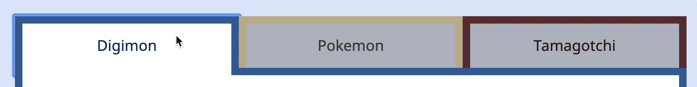
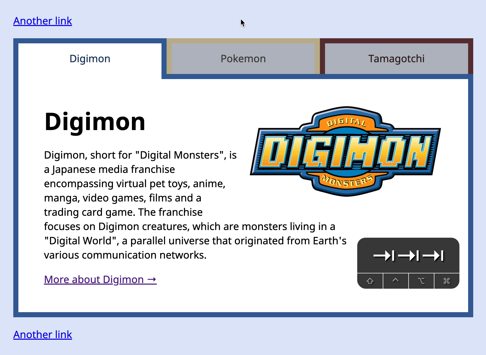

Let’s add keyboard interactions to Tabby. You’re going to learn to do three things here:
How to improve the focus
How to change the default tab sequence
How to switch tabs with arrow keys
Before we begin, make sure you add this code at the top of your JavaScript file. It resolves inconsistencies between browsers. Read more here.
// Resolve browser inconsistencies when clicking on buttons
document.addEventListener('click', event => {
if (event.target.matches('button')) {
event.target.focus()
}
})
Improving the focus
Try clicking on (or tabbing into) a .tab. Here’s what you’ll see.

Did you notice the focus ring?
The purpose of a focus ring is to grab attention. It makes sure the user knows where the focus is on. In this case, the focus ring doesn’t have enough contrast (especially on the Digimon Tab) to hold attention. When the default focus doesn’t generate enough contrast, you want to create your own focus style.
I wrote more about designing your own focus style in this article.
For Tabby, I chose to style focus with an inner box-shadow.
With this change, users are able to use the Tab key according to what they expect.
If the user clicks the second tab, we want to make that tab available. We also want to disable the first tab. This means we:
Set tabindex to -1 for other tabs
Remove tabindex for the second tab
tabsList.addEventListener('click', event => {
// ...
// Selects a tab
tabs.forEach(t => {
t.classList.remove('is-selected')
t.setAttribute('tabindex', '-1') // Disables other tabs
})
tab.classList.add('is-selected')
tab.removeAttribute('tabindex') // Enables current tab
})

Switching Tabs
Users cannot select other tabs with the Tab key anymore, but we still need to give them a way to change tabs. For Tabbed components, we let users change tabs with Left and Right arrow keys.
Left arrow: Select previous tab
Right arrow: Select next tab
There are five steps:
Listen for a keydown event.
Check if users pressed the Left or Right arrow keys.
Fourth. If the user pressed Left, and they’re not on the first tab, we want to select the previous tab. Here, we know the previous tab is tabs[index - 1].